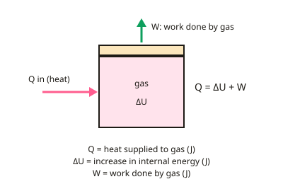

A-level Physics Year 13 · Topic 19
Thermodynamics and engines
Thermodynamics and engines is about how heat, work and internal energy are linked, and how engines turn heat into motion.
We will use the first law, p V diagrams, and the different types of gas process.
Then we analyse petrol and diesel engine cycles, engine power and efficiency, the second law, and heat pumps and refrigerators.
- 7 subtopics
- 399 questions
- Free: 19.1 notes and 8 questions
In this topic
- 19.1The first law of thermodynamicsFree below · 56 questions
- 19.2Work done by a gas and p–V diagramsOpen in Full Marks · 65 questions
- 19.3Isothermal, adiabatic, isobaric and isovolumetric changesOpen in Full Marks · 61 questions
- 19.4Engine cycles: Otto and diesel, four-stroke indicator diagramsOpen in Full Marks · 23 questions
- 19.5Engine power, efficiency and friction powerOpen in Full Marks · 64 questions
- 19.6The second law of thermodynamics and maximum (Carnot) efficiencyOpen in Full Marks · 63 questions
- 19.7Heat pumps and refrigerators: coefficient of performanceOpen in Full Marks · 67 questions
19.1 · Free notes
The first law of thermodynamics

Key points
- The first law of thermodynamics is a statement of conservation of energy: the heat supplied to a gas is shared between increasing its internal energy and the work the gas does.
- AQA form: Q = ΔU + W. Q is the energy transferred to the gas by heating (J). ΔU is the increase in internal energy (J). W is the work done by the gas on its surroundings (J).
- Sign convention (state it in answers): Q is positive when heat flows into the gas and negative when it flows out. W is positive when the gas expands and negative when it is compressed. Some sources write ΔU = Q + W with W as work done on the gas, so always check which is meant.
- Internal energy is the sum of the random kinetic and potential energies of all the molecules. For an ideal gas there are no intermolecular forces, so U is just the total random kinetic energy and depends only on temperature.
- For n moles of an ideal monatomic gas, U = (3/2)nRT, so ΔU = (3/2)nRΔT. This holds for any process, because U depends only on T. R = 8.31 J mol⁻¹ K⁻¹.
- If the temperature rises, ΔU is positive. If it falls, ΔU is negative. If it is constant, ΔU = 0 for an ideal gas.
- Work done at constant pressure: W = pΔV (Pa × m³ = J). Expansion gives positive W. Compression gives negative W, meaning work is done on the gas.
- Special cases: constant volume gives W = 0, so Q = ΔU. No heat transfer (adiabatic) gives Q = 0, so ΔU = −W. Constant temperature gives ΔU = 0, so Q = W.
- Heating at constant pressure needs more energy than heating at constant volume for the same ΔT, because some of the energy supplied is used as work to push back the surroundings.
- Common errors: mixing up the sign of W, using Celsius instead of kelvin in ΔU = (3/2)nRΔT, and forgetting that a negative Q means heat is lost. In calculations, write down Q, W and ΔU with their signs before substituting.
In more detail
- Worked first law: a gas receives 500 J of heat and does 200 J of work → ΔU = Q − W = 500 − 200 = 300 J.
- Worked compression: 150 J of work is done on a gas while it loses 40 J of heat → Q = −40 J, W = −150 J → ΔU = −40 + 150 = +110 J, so it gets hotter.
- Worked ΔU: 2.0 mol of monatomic gas heated from 300 K to 400 K → ΔU = 3/2 × 2.0 × 8.31 × 100 ≈ 2.5 kJ.
- Worked constant pressure: the same heating at constant pressure also needs W = nRΔT = 1.7 kJ, so Q = 2.5 + 1.7 ≈ 4.2 kJ, more than at constant volume.
Practice
The first law of thermodynamics: 8 questions
Pick an answer to check it, or open the answer for the explanation.
1. On which quantity does the internal energy of a fixed mass of ideal gas depend?
- Temperature and volume
- Volume only
- Temperature only
- Pressure only
Show answer
C: Temperature only. An ideal gas has no intermolecular forces, so no potential energy. U is the total random kinetic energy, which depends only on temperature.
2. Which statement about Q = ΔU + W is correct when W is the work done by the gas?
- Q is positive when the gas loses heat
- W is positive when the gas expands
- ΔU is always equal to Q
- W is positive when the gas is compressed
Show answer
B: W is positive when the gas expands. With W defined as work done by the gas, W > 0 for expansion. Q > 0 means heat is supplied to the gas, and ΔU = Q only if W = 0.
3. 2.0 mol of an ideal monatomic gas in a rigid container is heated from 300 K to 350 K. How much heat is supplied? (R = 8.31 J mol⁻¹ K⁻¹)
- 1.25 kJ
- 2.08 kJ
- 0.83 kJ
- 125 J
Show answer
A: 1.25 kJ. Constant volume so W = 0 and Q = ΔU = (3/2)nRΔT = 1.5 × 2.0 × 8.31 × 50 ≈ 1250 J. The 2.08 kJ figure wrongly uses 5/2 instead of 3/2.
4. The internal energy of a gas rises by 80 J while 30 J of work is done on the gas. What is the heat transfer?
- 110 J out of the gas
- 110 J into the gas
- 50 J into the gas
- 50 J out of the gas
Show answer
C: 50 J into the gas. Work done on gas = 30 J, so W (by gas) = −30 J. Q = ΔU + W = 80 − 30 = +50 J, which is heat supplied to the gas.
5. Gas in a thermally insulated cylinder expands and pushes out a piston. Why does its temperature fall?
- It loses heat through the walls
- Its volume increase lowers the mass
- Its molecules gain potential energy
- It does work using its own internal energy
Show answer
D: It does work using its own internal energy. Insulated means Q = 0, so ΔU = −W. The gas does positive work, so its internal energy and hence temperature fall.
6. A gas at constant pressure 1.0 × 10⁵ Pa expands from 2.0 × 10⁻³ m³ to 5.0 × 10⁻³ m³ while 600 J is supplied as heat. What is ΔU?
- 300 J
- 900 J
- 600 J
- 0 J
Show answer
A: 300 J. W = pΔV = 1.0 × 10⁵ × 3.0 × 10⁻³ = 300 J. ΔU = Q − W = 600 − 300 = 300 J.
7. Why does heating a gas by 10 K at constant pressure need more heat than heating it by 10 K at constant volume?
- Heat is lost through the cylinder walls
- Some energy is used to do work on expansion
- The molecules gain more kinetic energy
- The gas has more internal energy at the start
Show answer
B: Some energy is used to do work on expansion. ΔU is the same for the same ΔT, but at constant pressure the gas also does work pΔV. Q = ΔU + pΔV is therefore larger.
8. Which statement about the internal energy of an ideal gas is correct?
- It is the total random kinetic energy of the molecules
- It includes the energy of intermolecular attractions
- It equals the work done by the gas
- It is zero at 273 K
Show answer
A: It is the total random kinetic energy of the molecules. An ideal gas has no intermolecular forces, so internal energy is only the random kinetic energy. It is zero only at 0 K, not 273 K.
Keep going in Full Marks
Full Marks has 56 questions on The first law of thermodynamics (48 more than here), set out in practice levels. You also get notes and 3D models for all 7 subtopics of Thermodynamics and engines, plus games, timed exams and past papers.
On your exam board
Not in the OCR A, OCR B and Edexcel specifications.